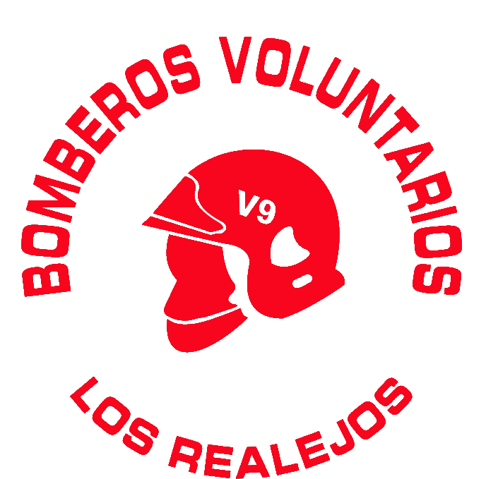

🔔 Novedades
Nueva actualización de GEOHIDRANTE CANARIAS
Base de datos actualizada con nuevos, modificados y retirados hidrantes.
Versión 3.5Datos: 14/08/2026Pulsa “Mi ubicación” para localizar y ordenar los hidrantes más cercanos.
📍 Hidrantes más cercanos
🔄 Actualización de hidrantes
Última actualización de la base de datos: 14/08/2026
Los cambios corresponden a la comparación con la base anterior utilizada por GEOHIDRANTE CANARIAS.
🤝 Entidades colaboradoras
Proyecto impulsado por la Asociación de Bomberos Voluntarios de Los Realejos.

Entidad impulsora del proyecto
ℹ️ Sobre el proyecto
GEOHIDRANTE CANARIAS es un proyecto de Bomberos Voluntarios de Los Realejos para facilitar la localización de puntos de agua y apoyar la respuesta de los servicios de emergencia.
La aplicación tiene como finalidad exclusivamente la geolocalización de hidrantes. La Asociación de Bomberos Voluntarios de Los Realejos no se hace responsable del estado, operatividad, accesibilidad, presión, caudal o disponibilidad de agua de los hidrantes. La información mostrada puede estar sujeta a cambios y debe verificarse sobre el terreno cuando sea necesario.